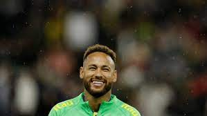

As the announcer at the Stade Océane cycled through Brazil’s team on Friday, before the squad dismantled Ghana, 3-0, a murmur of appreciation greeted each familiar, stellar name. Alisson was granted gentle applause. Thiago Silva earned a respectful, admiring cheer. Raphinha drew a sizzle of anticipation. And then, leaving just a hint of a dramatic pause, the announcer came to Neymar. There were, perhaps, mitigating circumstances. The 30-year-old Neymar was, after all, on home turf, or something very close to it. Le Havre, a sleepy port town on the Normandy coast, sits just a couple of hours northwest of Paris. The stands were dotted not just with jerseys in Brazil’s bright canary yellow but with the rich, deep blue of his Paris St.-Germain club team, too.
